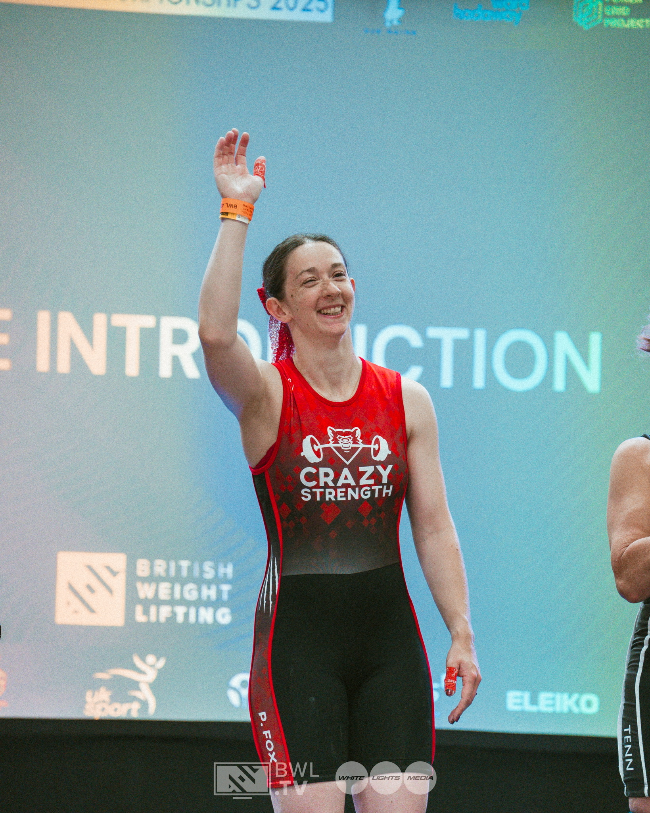
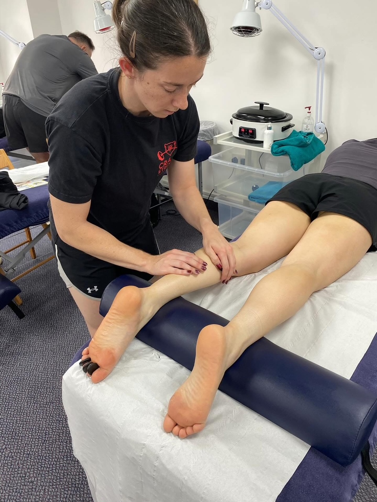
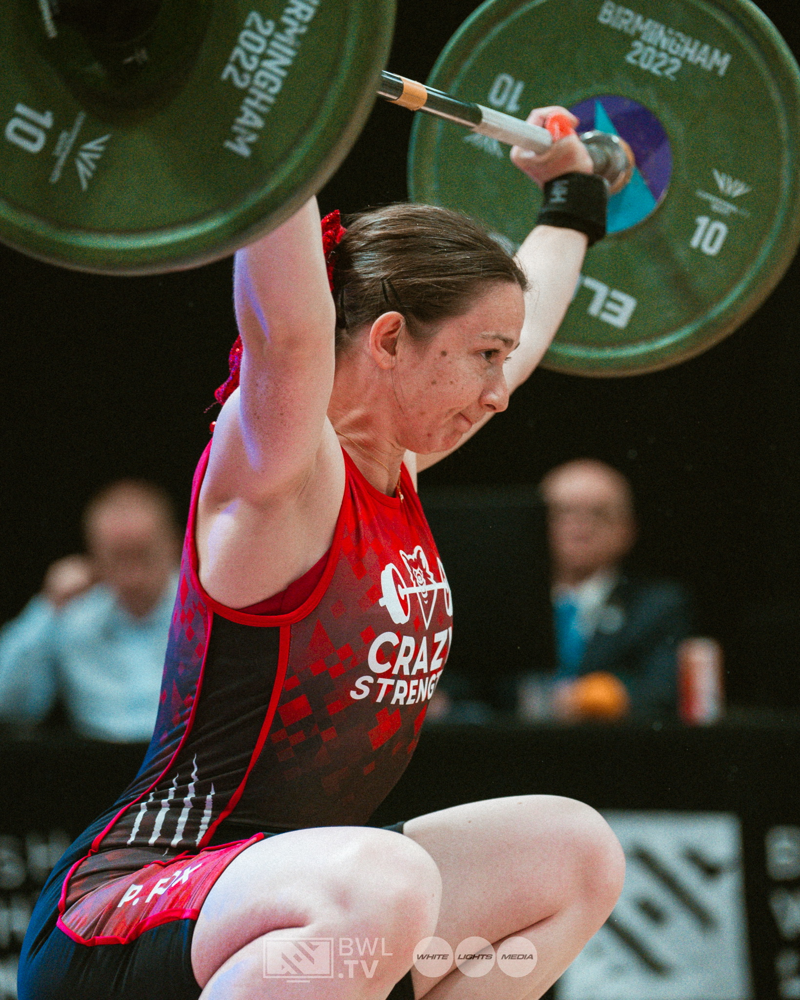

Hi, I'm Pip.
Level 4 Sports Massage Therapist ☺️
British Weightlifting Level 2 Coach 💪
Crochet addict 🧶
I am a Level 4 Sports Massage Therapist using advanced therapies to help you move better, recover faster, and perform at your best. You can find me at Crazy Strength in Amesbury, Fox Recovery is designed for everyone, whether you're training for an event or just dealing with daily aches and pains.
To ensure you get exactly what your body needs, every appointment includes dedicated time for a full assessment, targeted treatment, and clear aftercare advice.
Treatments & Pricing
Book a session with me to recover your strength.
Check up & Chat
Not sure what you need? Book a quick consultation to discuss how I can help.
15 minutes — £0.00
Book Free ChatSports Massage
This treatment may include a range of methods depending on your individual needs. Techniques such as hot stones, IASTM and cupping may be used during your session. Please let me know if you have any preferences and we can discuss the most suitable approach for your treatment.
60 minutes — £50.00
90 minutes — £70.00
View AvailabilityHot Stones Massage
Hot stone massage is great for deep muscle relaxation and stress relief, while cold stone massage helps reduce inflammation and soothe the nervous system. Treatments can include both hot and cold if that's what's best to treat you.
60 minutes — £40.00
90 minutes — £60.00
View AvailabilityPregnancy Massage
A pregnancy massage is a specialised, gentle treatment designed to support someone through the physical changes of pregnancy by easing tension, improving circulation, and promoting relaxation.
60 minutes — £55.00
View AvailabilityManual Lymphatic Drainage
Lymphatic drainage is a gentle massage technique that stimulates the lymphatic system to help remove waste, reduce swelling, and support immune function.
60 minutes — £45.00
View AvailabilityDry Needling
Dry needling uses sterile, single-use needles to help manage muscle pain and tension. It may be included in your treatment where appropriate. We’ll discuss the benefits, possible side effects and other options first, and you can choose whether to have it.
10 minutes — £15.00
View AvailabilityK-Taping
K-Taping (or Kinesio Taping) is a therapeutic technique that uses stretchy, skin-like adhesive tape to support muscles, reduce pain, and improve circulation without restricting movement.
10 minutes — £15.00
View Availability